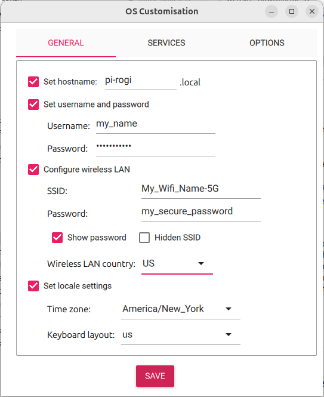
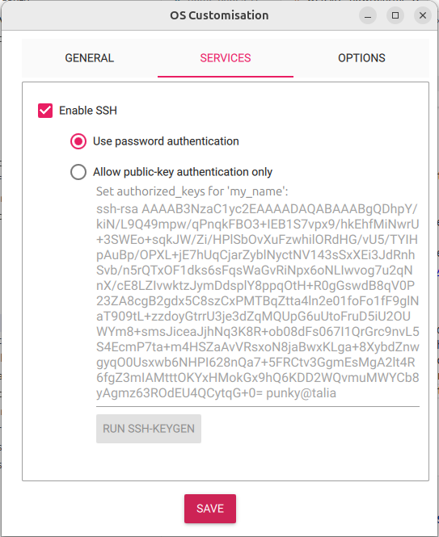
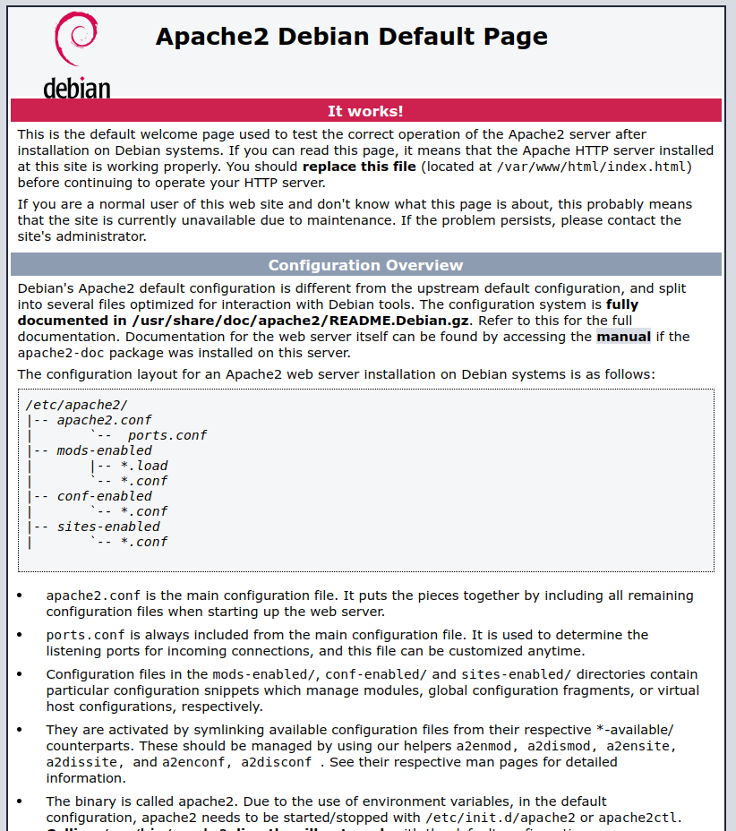
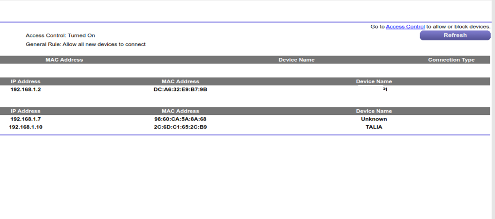
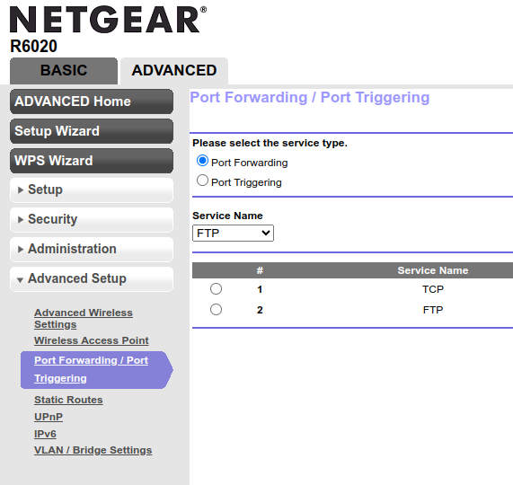
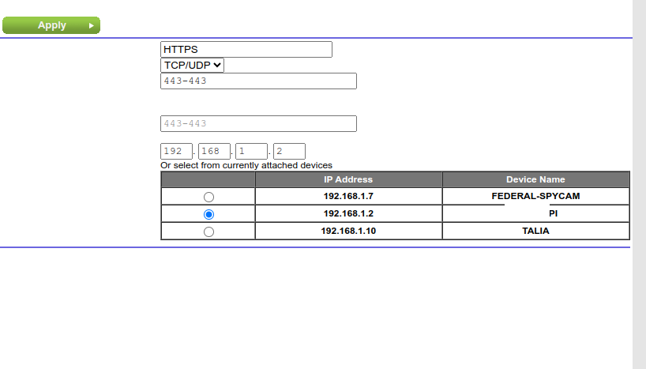
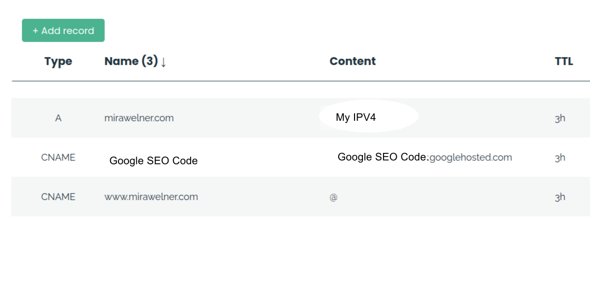
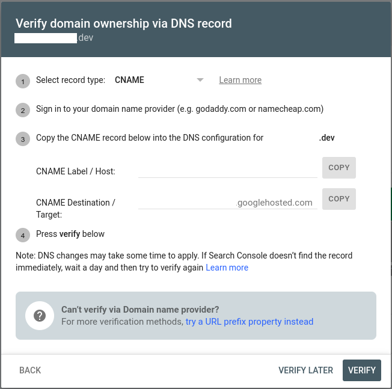
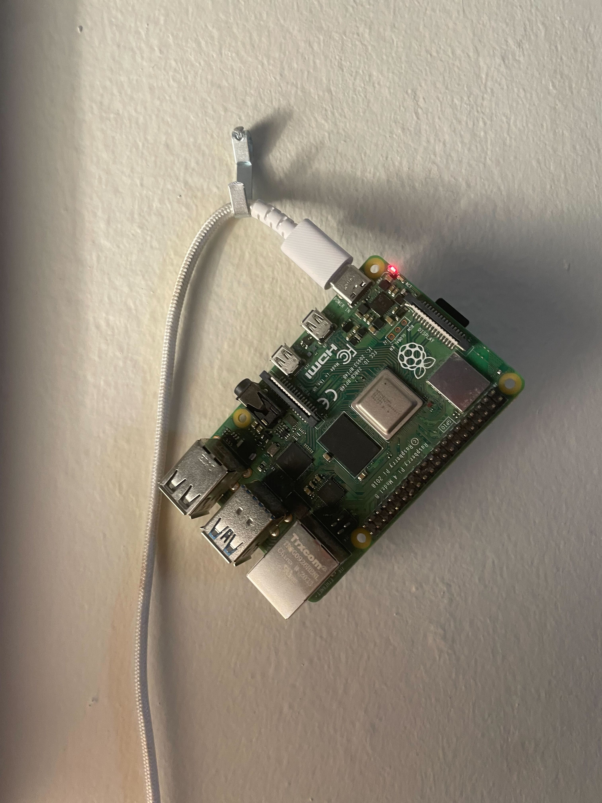

How I built this website on a Raspberry Pi
- Getting your Equipment
- Creating a Headless Pi
- Installing an Apache Server
- Making Your Site Publicly Accessable
- Getting an HTTPS Certificate
- Getting a Domain Name
- HTML and CSS
- Virtual Hosts
- Backups and Version Control
- Improve SEO with Google Search Console
- Track Viewers with GoatCounter
- Keep bots away with fail2ban
- Install UnattendedUpgrades to keep your Pi up to date
- Display your Pi's CPU temp and RAM usage
- Crash test your site via HackerNews
As of the time of writing this, the Raspberry Pi 5 has recently been released. Some people are buying it excitedly, while others think that its value over previous models doesn't warrant the price increase. In any event, many people will be implementing various projects on their new (or old) Pis.
As most Pi-havers know, one of the many cool things you can do on a Raspberry Pi is run a webserver. There are tutorials here and here and probably many more places that explain how. There are also some reasonably well known sites, my favorite being this one, which is run on a solar-powered Pi. And there is also, of course, this site—my personal website—that you are currently viewing, which is being run on a Raspberry Pi in my room.
While tutorials abound in regards to getting a basic webserver set up, there is a difference between a functional server and a good usable website. I've been working on getting my personal site set up over the course of the past five years, spending an hour or so every month working on improving the Pi. I never intended for this personal project to become so lengthy or complex, but eventually I ended up with a fairly robust system for running, maintaining, and editing my website. This tutorial will describe what I've learned throughout the process of creating this site in 15 steps, so that you can use it to create and maintain your own sites.
This tutorial assumes that you already know how to use the command line, and that you have some understanding of HTML and CSS. That is about it.
Step 1: Getting your Equipment
I run this site off a Raspberry Pi 4 B+. I used to have a Raspberry Pi Zero 2 W, but I upgraded it because I thought that my site was slow due to insufficient hardware. Turns out it was actually a PEBKAC bug on my end, which I was able to fix. So if you are starting out your personal site, a Pi Zero for $15 is more than enough; just make sure it is the Pi Zero W, which you can connect with the wifi.
Many Pi shops sell "kits" with various accessories to the Raspberry Pi, like cameras. You don't need a kit, but you do need:
That's it. That is all you need, unless you want a case. If you go for the Pi Zero, this currently costs $38.89, plus shipping and tax. If you want the Pi B+, it will run you up to $58.63. Be sure to plug it in somewhere safe, or else you may accidentally trip over the plugged-in cord right when then AAAI Undergraduate Consortium admissions officer is looking at your site, causing them to email you asking why your site link is broken, and you will feel extremely silly. This did indeed happen to me.
Step 2: Creating a Headless Pi
Unless you want to have to plug a keyboard and monitor into the Pi, you will need to make the Pi "headless." A headless Pi doesn't have to be accessed by a monitor and keyboard, and instead, you work on another computer, SSH into the Pi, and then play around in the filesystem of the Pi so long as both your current computer and the Pi are connected to the same wifi.
To set this up, you need to specify that you want it when you first flash the Pi. To flash the Pi, I recommend using the Raspberry Pi Imager which can be found here.
Once you download and run the imager, it will ask you what device, OS, and storage you want. For the device, select the model of Pi that you bought. For the OS, I recommend clicking "Raspberry Pi OS (other)" and selecting the Raspberry Pi OS Lite, which comes without desktop capabilities. Since we will be running this headless, you will be interacting with it via the command line, and the desktop features will just be clutter. Plug your SD card into your computer using the Micro SD cart to USB adapter, and the the dropdown menu for selecting the storage device should list the SD card. Click "Next," and it will ask you, "Would you like to apply OS customization settings?" Click "Edit Settings."
Technically you can leave the Pi name as the very boring raspberrypi.local, but you should change it if you want it to be interesting. After that, you want to make sure that the Pi can connect to wifi, so give it your wifi information. The rest is fairly self-explanatory.
Now you click the button to enable SSH! I personally do not recommend the option of only being able to access it with your public key. I know you want to make it extra secure, because you are making it accessible from the internet, but there have been a few occasions when I sent my computer in for repairs, didn't have my key, and couldn't access the site. However, if you are less forgetful and more security-conscious than I am, go ahead and make it only accessible by key.
Then you put the SD card into the Pi, and plug it into the charger. Wait a bit for it to connect to wifi, and then SSH into your Pi with the command:
You should now be in the home directory of your Pi! However, you probably don't want to have to remember the password every time, so I recommend setting up an RSA key pair. If you generate an RSA key pair, you can send the public key to the Pi and keep the private key on your computer, and the Pi will recognize your computer and grant you access. Everyone else can still get in via the password.
You if you are on Linux or MacOS, create the key with the command:
and then send it to your Pi with the command
If you are on windows,
will create the pair but you will have to manually send it to the Pi. Copy it from C:\Users\<YourUsername>\.ssh\id_rsa.pub, ssh into the Pi, and paste the file here: ~/.ssh/authorized_keys
You now have a headless Pi that can be accessed via SSH! One thing that made my life easier was making a alias for it. So instead of having to remember the name of the Pi, open up your config file at ~/.ssh/config with your text editor of choice (I recomend micro) and create a Host object. It looks like this:
HostName <ip address>
User pi
Add the above text to your config file with the real local IP address, and you will be able to just type ssh website and access your site. Also if you use VSCode, if you put a Host in the config file, you can click on the bottom left corner of the VSCode IDE and click "Connect to Host" which will appear in the dropdown menu. Then you can edit files on your Pi with a VSCode environment!
Step 3: Installing an Apache Server
Now that you can SSH into your Pi, it is time to give it a webserver. I prefer Apache2. Now that I'm talking about work taking place on the Pi, I will assume that your OS is Linux, because that is what Raspberry Pi OS is based off of. Install Apache2 with:
sudo apt upgrade
sudo apt install apache2 -y
Congratulations, you now have a webserver running off your Pi! You can access it locally, meaning that anybody connected to your wifi can look at the site. In order to get it, you need the local IP address, which you can access with the following command:
Run that on the Pi and take the resulting IP address and paste it into a browser as if it were a url. You should see the Apache2 startup screen which should look like the below image:
Step 4: Making Your Site Publicly Accessable
The next step is getting the server on your Pi accessable to people who are on different Wi-Fis. First, log into your router. Typically the way to access your router (although you might have an unusal router) is by typing 192.168.1.1 into your browser, like as if it were a URL. The reason that this works is because the IP range 192.168.x.x is reserved for local addresses, meaning that anything in that range will be a device connected to your Wi-Fi. Typically, routers select the first local IP address, which is 192.168.1.1.
Once you are in your router, you need to set up port forwarding. Everything on the internet, including websites and your personal router, have IP addresses. However, typically if somebody figures out your router's public IP and they try to search it, it will say "I am a personal router, go away" and not give a response. If you have a website, however, you don't want that! If the thing trying to access your public IP address is a browser or some other web searching device, it will use either port 80 for the HTTP protocol or port 443 for the HTTPS protocol. So if somebody on the internet says, "hey, I'm trying to access your router via port 443," rather than saying, "I am a personal router, go away," you want your router to say, "oh, port 443 means I send this message to the Raspberry Pi." All of the personal devices connected to your router have the same public IP address as the router. However, they have different private IP addresses, so the router can talk to all the devices using their own specific private IP. Port forwarding tells your router that if somebody messages its public IP on port 80 or 443, then it should forward the message to the private IP corresponding with your Pi.
I am using a Netgear router, so this section will explain how to port forward using a Netgear router. If you use a different router, the methods might be similar, or you may have to look up a different tutorial on how to set up port forwarding.
If you have Netgear, the homepage of your router should have a section titled "attached devices". Click on it, and it will show all the local addresses of your devices.
As you can see, the devices listed on my router include Talia (my computer), Unknown (my phone), and **Pi, which is my Raspberry Pi (name redacted for privacy). They are connected to the local network. Since the Pi is the one that I want to connect to, I take its IP address 192.168.1.2 and add port forwarding functionality to it. If the Wi-Fi resets during a power outage, or if you unplug and reset it, the local IP may change, and you might have to reset the port forwaring, but thankfully this shouldn't happen very often.
To enable port forwarding on a Netgear router, go to the "Advanced" tab, then click "Advanced Setup" and go to "Port Forwarding / Port Triggering."
There are typically two protocols that will be used to look at websites: HTTP and HTTPS. HTTP uses port 80, and HTTPS uses port 443. So, set up two protocols: one for port 80 to connect to the local address that you saw your Raspberry Pi use, and one for port 443 to do the same. Once you are on the port forwarding page, click the "Add" button.
The above image shows how to get a port forward set up for HTTPS. For HTTP, you just need to do port 80 instead of 443. Ignore FEDERAL-SPYCAM; that is just my phone.
Find your public IP address here. Paste it into your browser like a URL. You should see the Apache2 starting page, which means that you are connected to the internet! A word of warning: if you have the misfortune of being in an apartment complex with fiber internet, you will have to call the fiber internet company because the whole complex shares the same IP address. When I moved to Pittsburgh, my apartment had fiber internet, and I was literally on the phone with the Ruckus Box people for three consecutive days trying to get third-level support so I could get my own IP address. It is typically doable, and they did not charge me extra in my situation, but they might end up charging you, depending on where you live and which fiber internet company your location uses.
However there is an important missing step, which is ensuring that your router consistantly gives your Pi the same IP address every time it starts up. Otherwise, whenever your power goes out and the router has to re-start, your Pi will have a different IP address. I originally did not think this was an important step, but then the amazing InMice on HackerNews mentioned that certain routers, such as ones from AT&T, will actually not allow you to port forward to a device that doesn't have a static IP address, so I am adding this step in.
If you have a NetGear router, go to the Advanced tab, then Setup, then LAN setup. Click 'ADD', and then add the name of your Pi and select a local IP address for it. I chose `192.168.1.2` arbitrarily but you could select 192.168.1.7 or anything else you want.
Then you have to limit the number of IP addresses your router gives out, so it does not give out your reserved address to another device. Find the place where it says "Starting IP Address" and set it to your Pi's selected IP address, plus 1. Or if the address you selected is very high, go to where it says "Ending IP Address" and set it to your Pi's selected IP address, minus 1. It is up to you.
Once again this was not in the original post, thank you InMice for pointing this out.
Step 5: Getting an HTTPS Certificate
HTTPS is more secure than HTTP (the S stands for "secure"), so it is the default for most modern browsers. To allow your site to be accessed via HTTPS, you need an HTTPS certificate. Thankfully, you can just use certbot to install it. The linked site explains very clearly what you do—when it asks you what OS you are using, you can put "Debian," which is what Raspberry Pi OS runs off of.
Step 6: Getting a Domain Name
You now have a Raspberry Pi that is accessible from any Wi-Fi network around the world! Someone could be across the globe from you, and they could type in your public IP address and view your Raspberry Pi! However, they would need to memorize your IP address to look you up. If you want your site to be easy to access, you will need to buy a domain name. The downside of domain names is that they have to be rented rather than purchased outright like the Pi, but they are typically not very expensive. Personally, I recommend Njalla, which typically costs €15 annually. It doesn't try to "help" you too much, meaning it doesn't get in your way, and it markets itself as being secure and respectful of internet privacy.
Once you have bought your domain name from Njalla, go to the domain name page on Njalla and click "manage."
As you can see below, there are three records. The first is an A record, and the value is the IPV4 address. This is fairly self explainatory: if your domain name is accessed via a browser, it will go in the direction that your IPV4 address points. The second record, the one below the first, is a CNAME record, which maps an alias domain name to the true domain name. So if your CNAME record is prefix and your domain name is domainname.com, then you can make a CNAME record for prefix with the value @ (the third record, the "@," just refers to the domain name) and prefix.domainname.com will take you to domainname.com.
The two CNAME (the last two) records are for the benefit of Google Search Console, which I talk about in more detail in section 10. However for now, if you like, you can add a www CNAME record like I have at the bottom row, or not if you don't want the www prefix to be an option for your site. Ignore the middle record for now.
I don't have a AAA record because I live in a building with fiber internet, so I do not have an IPV6 address, but if you do, then I advise getting an AAA record pointing to your IPV6.
Now you should be able to access your site via a domain!
Step 7: HTML and CSS
Now this is the fun part: adding the HTML and CSS to build your site! The default homepage made by Apache2 is /var/www/html/index.html. I advise keeping the index file as your homepage, and putting the rest of your code in the html directory. I cannot walk you through this step-by-step, because how you wish to design your site is up to you! However, there are a few things you may wish to keep in mind:
Do NOT use an online free template; they are not very good. Remember the PEBKAC bug which made me buy a Raspberry Pi B+ rather than a perfectly good Raspberry Pi W Zero? It was because the template had unnecessary JavaScript that loaded too slowly. When I wrote my own script, the bug went away.
Avoid copying from other sites, because oftentimes the HTML is autogenerated and will be unweildy. One exception to this is my site, which does not use autogenerated code. If you right-click on my site on a browser and press "Developer Tools" and then "View Page Source," you can look at the raw HTML, which will link you to the raw CSS. I'm hardly a professional web developer, but it is servicable, and you are welcome to steal it.
I never thought I would say this, but you can use ChatGPT sometimes. Don't ask it to generate your site all at once, or you will end up with a horrible disaster that is not only awful but unoriginal. However, ChatGPT can be good when you want advice on a small section of your site. For example: the background of the welcome portion of my home page, where it lists my name and resume, used to just be black in an earlier draft. I asked ChatGPT to make the CSS "look more like a developer's site," and it added the box in the center. I changed the color scheme and added the blue gradient myself, but the box was ChatGPT's idea. Just make sure taht you don't overuse it; LLMs aren't quite that good yet.
You want the secret to making good HTML and CSS on your website? Read a book on HTML and CSS, or take a class on it if you are still in college. There is no secret; you just have to learn the skills. I read chapter 3 of this book and that was what helped me make this site. Just read the book, okay? Or find a better book. But if you find a better one, you need to email me and let me know so I can read it too.
Go easy on the JavaScript. All you really need is a static site for 99% of your needs if its just a personal site. Avoid overdesigning.
For security, you should set your files to permissions level 644 and your folders to permission level 755. To change the permissions of a file, use chmod. So for example, to change file.html to permission level 644, you would use the command
This is a great excuse for me to plug my tools! Software development tools are everywhere, but personally I use ghostty as a terminal emulator to SSH into the Pi, fish shell for both my personal laptop and running on the Pi, and micro as a text editor when I wish to make small edits on the Pi. When I want to make significant edits on the Pi, I use vscode which can edit the text with a full IDE as if it is on your local computer. Right now, I am writing this tutorial on VSCode!
Step 8: Virtual Hosts
Now, this may come as a surprise to some people, but I am actually a human with many thoughts and hobbies beyond just tech! Not many, but a few. As such, I decided to create two websites: a professional personal site and an actually personal personal site. That way, when I send my site to somebody and am hoping to get a job with them, they don't have to read my science fiction short stories. However, I host both of my websites on my Pi, and I do that by virtual hosting. If you are not interested in this, you can skip this section, but if you want an additional site for the terrible poems you wrote in middle school, then this is the way to do it!
First, rather than the default location of /var/www/html, put one of your sites at /var/www/domain1/html and the other at /var/www/domain2/html. At this point, it may be convenient to make an alias to cd into both of your domains. If you are using the fish shell, you can do this by
Now, in order to make sure that they are both owned by you rather than root, you must run the command
for both domains, and run the command
which is the correct permission setting for folders you want to be served on your site.
Now you have to edit the configuration files! They are found at /etc/apache2/sites-available. Apache already makes a default config file for you: it is the file at 000-default.conf. Copy this file into two different files, your_domain_1.conf and your_domain_2.conf. Now you will have a very basic config for both domains that looks something like this but with comments:
...
ServerAdmin webmaster@localhost
DocumentRoot /var/www/html
... ErrorLog ${APACHE_LOG_DIR}/error.log
CustomLog ${APACHE_LOG_DIR}/access.log combined
</VirtualHost>
Firstly, you will want to change the *80 to *443, so that it intercepts HTTPS requests and HTTP requests, and then you will want to change the DocumentRoot to the root of the proper domain. There are some other fun changes you can make here, such as adding in lines that will redirect www.domainname.com to domainname.com, and for the 443 virtual host, links to the certificate that you should have installed via certbot on step 5. As such, rather than walking you through adding every single line of code, I will simply leave my config file here, with added comments for clarity:
ServerName yourdomain.com
ServerAlias www.yourdomain.com
ServerAdmin youremail@email.com
#point to the folder where your html is
DocumentRoot /var/www/domainname/html
#sets console log settings
Level info ssl:warn
#sets the 'home page' to index.html
DirectoryIndex index.html
#allows for redirects
RewriteEngine On
#remove trailing / at the end of url
RewriteCond %{REQUEST_URI} (.*)//+(.*)$
RewriteRule ^ %1%2 [R=301,L]
#redirect www.domainname to domainname
RewriteCond %{HTTP_HOST} ^www\.mirawelner\.com [NC]
RewriteRule ^ https://mirawelner.com%{REQUEST_URI} [R=301,L]
# Redirect /index.html to /
RewriteCond %{THE_REQUEST} /index\.html [NC]
RewriteRule ^(.*)/index\.html$ https://%{HTTP_HOST}%1/ [R=301,L]
#defines permissions for the html folder
<Directory /var/www/domainname.com/html>
#shows index.html rather than listing contents
Options -Indexes
#allows .htaccess (will discuss later) to override
AllowOverride All
#allow anybody to see website
Require all granted
</Directory>
# says where to put error/access logs
ErrorLog ${APACHE_LOG_DIR}/error_domainname.log
CustomLog ${APACHE_LOG_DIR}/access_domainname.log combined
#links to the https certification installed with certbot
Include /etc/letsencrypt/options-ssl-apache.conf
SSLCertificateFile /etc/letsencrypt/live/domainname.com/fullchain.pem
SSLCertificateKeyFile /etc/letsencrypt/live/domainname.com/privkey.pem
</VirtualHost>
#if they connect with port 80 we want to redirect it back to 443
</VirtualHost *:80>
ServerName mirawelner.com
ServerAlias www.mirawelner.com
#allows for redirects
RewriteEngine On
# says where to put error/access logs
ErrorLog ${APACHE_LOG_DIR}/error_domainname.log
CustomLog ${APACHE_LOG_DIR}/access_domainnamelog combined
# Redirect all HTTP requests to HTTPS
RewriteCond %{SERVER_NAME} =mirawelner.com [OR]
RewriteCond %{SERVER_NAME} =www.mirawelner.com
RewriteRule ^ https://%{SERVER_NAME}%{REQUEST_URI} [END,NE,R=permanent]
</VirtualHost>
Feel free to use the above config file for both of your virtual hosts! However, beware of the makefile effect and make sure not to add to this without also pruning unnecessary lines.
Now you have your config files set up. It is time to enable them via the command:
Run that for both conf files, and then remove the default conf file via the command:
It should prompt you to run the command:
Run it and then test for config issues with
If this comes back with no errors, you can restart Apache2
And you should be ready to go! Now you can have two domain names that point to the same public IP address, but depending on which domain name is searched, it will give you a different website, and you will finally have a safe online space for your terrible middle school poetry, far away from where a colleague might find them.
Step 9: Backups and Version Control
So now you have a site up and running! You start showing it to people who you hope will hire you, and all of a sudden, somebody spills an entire jug of tomato juice onto your Pi! You should have backups of your site, just in case something like this happens. No hardware is ever safe. I know the cloud is just somebody else's computer, but at least somebody else's computer is at less risk than a Pi in a residential home. I recommend backing up your Pi on Git or Jujutsu, which are then stored on GitHub.
Step 10: Improve SEO with Google Search Console
If you are trying to make a professional site to showcase your engineering skill, it is helpful if the site comes up in the browzer when your name is searched. You can make that happen by firstly adding keywords to your header, and then by making your name one of the keywords. Keywords are added to the header like this:
What if that is still not enough? This is where Google Search Console is useful. Register your site with them by navigating the linked page and clicking in the top-left corner where it allows you to claim domain names. Remember that you want to register a whole domain, not just the domain prefix. It will tell you that a "txt" record-type is preferable, but if you are using Njalla, then you want CNAME. You should see this popup:
Go to Njalla and add a CNAME record corresponding to what Google told you to do. If you recall my previous image:
The CNAME Label/Host goes in the "name" column, and the CNAME Destination/Target goes in the content column.
Google Search Console does not automatically give you better SEO, so you would have to pay for that. However, it does allow you to request that unindexed files be indexed, which gives you a sense of what Google is picking up on and what it isn't. If you notice that Google keeps indexing files that you don't want it to be indexing, you can address the issue. For example, I have several pdfs on my site which I do not want indexed. Instead, I want the html files that serve the pdfs to be indexed, because I can control their keywords, title text, and preview text/images. So when I noticed that Google was indexing the pdfs rather than the html files, I was able to address it my making a robots.txt file and an .htaccess file.
A robots.txt file tells crawlers like Google and DuckDuckGo what they are allowed to look at. Bots will ignore robots.txt most of the time, but "good" bots like searchbots will respect it. My robots.txt file looks like this:
Allow: /
Disallow: /txt/*
Disallow: /docs/*.pdf
Sitemap: https://mirawelner.com/sitemap.xml
The first of these, User-agent: * means that this applies to all people or bots in contact with the website. Allow: / means that they are allowed to access anything in the server except the following things that are Disallowed. These ensure that nothing in the txt folder (which I will discuss later), including the pdfs, is indexed.
And as you can see at the end, I have a sitemap! The sitemap lists all the files that you want indexed, as well as a number indicating how important they are in comaprison to the rest of the site. So the files that need to be indexed first get a number closer to 1. I typically don't make the sitemaps myself; I just autogenerate them with this free tool and then edit them afterwards, because it will automatically add even pages that you want blocked, and the values that they give to each page may not be optimal.
So you have your robots.txt file and your sitemap, and you give Google a few weeks to index your files. You log into Google Search Console and notice that all the files that you blocked were added! What is up with that?
Just because Google's searchbot doesn't crawl files listed in robots.txt doesn't mean that it cannot index them if you or another party directly link those files. Robots.txt ensures that Google doesn't waste its limited crawl budget on your site looking at files that it can safely ignore, but in order to really ensure that the files you do not want linked are not linked, you need .htaccess. My .htaccess file looks like this:
#Google is an 'ALLOWED_GOOGLEBOT'
SetEnvIfNoCase User-Agent "Google" ALLOWED_GOOGLEBOT
#other pages in the site are 'ALLOWED_REFERRER'
SetEnvIf Referer "https://mirawelner.com" ALLOWED_REFERRER
#if its googlebot or refferer it can look, otherwise no
Require env ALLOWED_GOOGLEBOT
Require env ALLOWED_REFERRER
Require all denied
# However even if you are google, you can look, but can't index or follow
Header set X-Robots-Tag "noindex, nofollow"
</FilesMatch>
You will have to change some stuff up to tailor the code to your site; however, this could serve as a skeleton for you to build onto. Keep in mind that Google can take a few weeks to index something and will sometimes refuse to index things for no clear reason, but if you are patient, you can use Google Search Console to nudge your site in the correct direction. Also keep in mind that if you are a programmer, some of the people who you interact with will likely use DuckDuckGo rather than Google, and unsurprisingly, there is no console for that. There isn't much you can do about that other than choose good keywords.
Step 11: Track Viewers with GoatCounter
Google Search Console tells you how many times your site was clicked when searched in Google. However, it does not tell you how many times your site was viewed in general, including people who followed links. For that, you need GoatCounter!
There are other ways to track users to your site, but GoatCounter is the most privacy-sensitive. It tells you nearly nothing about the user, only how they got to the site, their OS and screen size, their country, and the language their device used. The site gives clear instructions on how to add it to your site: you just paste their JavaScript in your head.
Step 12: Keep bots away with fail2ban
Another way to check who has visited your site is to check your logs, which are found in /var/log/apache2. However, if you look at either your error or your access logs, you will find bots! Some of these bots are neccecary, like the Google bot, but some are malicious. If a bot keeps searching for files that don't exist on your server, it is likely searching for files which correspond to common vulnerabilities. Even if your site doesn't have serious vulnerabilities, its safest to keep these bots out. After all, your site is connected to your own Wi-Fi in your own house.
One way to do this is by installing fail2ban! It is an open source project, and it temporarily bans IP addresses that keep querying nonexistant files. You can make it a permanent ban, but I would not recommend that. Google cannot forget an address, so if you have files and then delete them, Google will keep them tracked and may occasionally ping your site to see if they have come back. If Google does that, you can tell it to buzz off for a bit, but you don't want to permaban the Google search bot!
Step 13: Install UnattendedUpgrades to keep your Pi up to date
This isn't neccecary, but it can be useful. If you update your site every week, you can just remember to run
sudo apt upgrade
sudo apt autoremove
whenever you SSH into your Pi. However if you are like me and only post once in a while, your Pi will go a long while without getting updated and upgraded. So it might be a good idea to install UnnatendedUpgrades! While it's not essential for running a personal site, I have personally found it quite helpful.
Unfortunately, it's somewhat tricky to install, because it is very version-dependant. As of today, Raspberry Pi OS runs on Debian 12 (Bookworm). To get UnattendedUpgrades running on that system, you need to install it along with its dependency:
Once those are installed, navigate to /etc/apt/apt.conf.d/ and open the file 50unattended-upgrades, which should have a lot of boilerplate code with some of it commented out. Navigate to the part of the file where it says,
...
#stuff in here
...
};
It is up to you what parts of your website that you want to update automatically, but comment the lines correspondingto features that you do not want to update automatically and uncomment the ones that you do. I personally uncommented everything because I want my Pi to be completely up to date, even when I abandon it for months.
Then, you will want to navigate lower in the file and uncomment the following two lines:
Unattended-Upgrade::Automatic-Reboot-Time "02:00";
If you like, you can change the time to a different time, but what this does is make it so that if the Pi needs to reboot, it does not reboot until 2AM when presumably fewer people will be on the site.
Then finally, navigate to /etc/apt/apt.conf.d/20auto-upgrades. You should see these lines:
APT::Periodic::Unattended-Upgrade "1";
And they should be uncommented. If they are commented, uncomment them. They ensure that the automatic updates are run. Then, test your script with
If it works, you should see many things printed out under "whitelist" and very few or none under "blacklist," depending on how you chose to set things up.
Step 14: Display your Pi's CPU temp and RAM usage
I've shown this site to many people, and I've had the following observation:
Academics, such as professors and researchers, care primarily about my publications and the labs I've worked in, which is not a huge surprise.
Hiring managers care about how many keywords are in my resume and on my site. One thing that I think helped a lot was when I added the tools and languages I used to all of my projects. For example, I specified in my resume that when I implemented a modified autoencoder which could determine the three primary spectra of a hyperspectral image, it was in the Python language. This is very useful to a hiring manager; imagine if I had implemented it in Julia? It would have been a totally different situation.
But without exception, the real hackers and programmers who do actual software engineering, and this includes the cooler professors who I have spoken with, are most interested in the fact that I am running this site on a Pi, and reporting its CPU temp, CPU use, and the total and used RAM. This is ironically probably among the simplest projects I've done, but it looks really cool.
Step one of this is to make a script which gathers than infornmation and puts it into a text
file in the server. The following file, which I call getstats.sh, is as
follows:
# File path for stats
STATS_FILE="/var/www/mirawelner.com/html/txt/stats.txt"
# Get CPU temperature and convert to Celsius (rounded)
cpu_temp=$(</sys /class/thermal/thermal_zone0/temp)
cpu_temp_celsius=$((cpu_temp / 1000))
# Get CPU usage
cpu_usage=$(top -bn1 | grep "Cpu(s)" | awk '{print $2 + $4}')
# Get total and used RAM in a single `free` call
read total_mem used_mem <<< $(free -m | awk '/^Mem:/ {print $2, $3}' )
# Combine all the data into the stats file
echo "PI location: My Room<br>">"$STATS_FILE"
echo "CPU Temp: ${cpu_temp_celsius}°C<br>" >> "$STATS_FILE"
echo "CPU Use: ${cpu_usage}%<br>" >> "$STATS_FILE"
echo "Total RAM: ${total_mem} MiB<br>" >> "$STATS_FILE"
echo "Used RAM: ${used_mem} MiB<br>" >> "$STATS_FILE"
This results in a file in the /var/www/mirawelner.com/html/txt folder, which as you may remember is blocked by .htaccess and robots.txt. Then in the index.html file, it is read with the following JavaScript:
<script>
function getData() {
$.get('txt/stats.txt', function (data) {
document.getElementById('stats').innerHTML = data;
});
};
</script>
Now you have both a JavaScript script to load the text file, and a bash script to generate it. All that's left to do is to create a CRON job to run it every minute. Run this command:
And at the bottom of the file, put this:
This will run the command every minute. And then you have a realtime display of the stats of your Pi!
Step 15: Crash test your site via HackerNews
This step was developed entirely by accident; testing of site functionality is especially challenging when the only devices available for testing are your own phone and computer. My only other resource was to ask my friends what they think of my site, and whether the site works properly on their phones, computers, and tablets.
But then, one of my posts, can we communally deprecate git checkout? was on the front page of HackerNews for an hour or so. At one point during that hour, a helpful HackerNews user named whalesalad commented, "Can we communally deprecate using monospaced fonts with full browser width content blocks for free form text?"
While I was at first mildly offended, after further thinking I decided that whalesalad was definitely correct. My posts were not easy to read on computer-sized screens.
So, I added in some margins and figured that would be the end of that. I was wrong, however, because then I got an email from another helpful user, who told me that the margins looked way too big on phones. I fixed the margin issue and responed to whalesalad, thanking them for the advice and telling them I had fixed it. But then that comment got other comments, including one from a user called politelemon, who was indeed polite in telling me that my site looked bad on Firefox Mobile, sending me a screenshot to prove it. Another of these comments was from user hooli_gan, who told me the same about my site on Chrome Mobile.
Taking their advice, I tried to figure out what was going wrong, but I didn't need to worry: it turns out that my post had been read by the incredible Izkata, who not only told me that there was an issue but inspected my CSS via the browser and told me what to fix.
Their entire comment read:
Specifically I'd suggest:
* Change "margin" on the <p> tags to "1.5rem 0"
* Change "margin" on .blog-page to "1.5rem auto" to keep the grey background centered based on width
* Add "max-width: 800px" (or whatever) to .blog-page
Izkata, thank you so much. You are incredible. This is why I sometimes love the software community: rather than just ignoring the unreadable site, this person took the time to inspect my code and share their software wisdom with me.
I fixed that issue, and then soon after, I got a discord message from a friend informing me that I had an issue with my image captions overlapping with the text, so I fixed that as well. My speed-coding leaves much to be desired, but I think I did a pretty good job considering the stress of fixing issues on the live codebase while my server was getting hundreds of hits.
In any event, you may not be quite so lucky as me as to be blessed by kind internet strangers and a very good friend, but hopefully you find a way to somehow stress-test your site. But before you go, behold:
The humble Raspberry Pi 4 B+, hanging from its charging cord in my room, currently serving you this page.
Questions, comments, or criticism?
Join the discussion!
HackerNews Lobste.rs